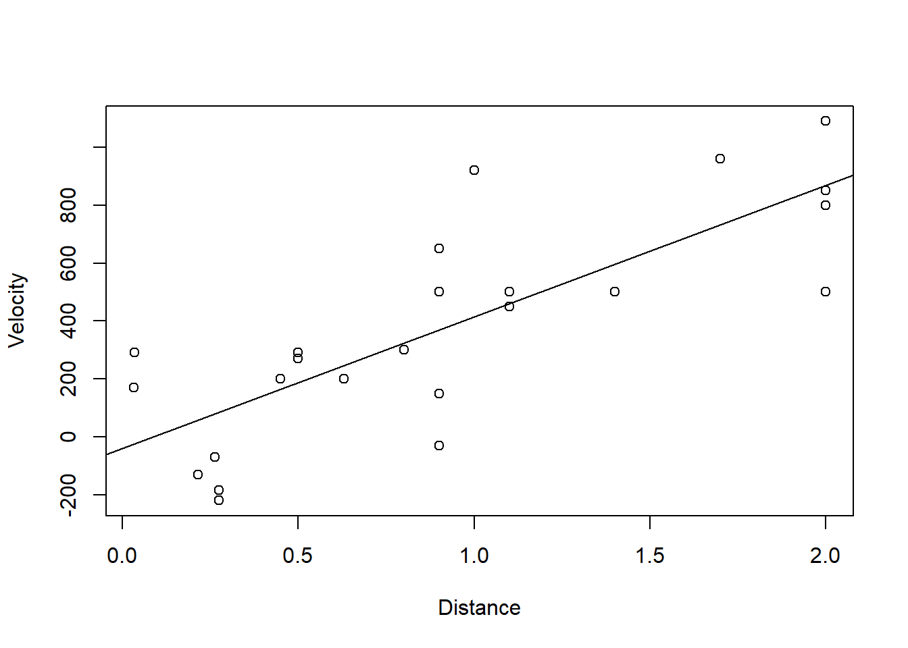

2 Example 1 - Modelling College Grades
In Lab 4, we looked at the Grades dataset from the PASWR package, which records the first-semester college GPA and SAT scores for 200 freshmen. The question of interest is to check whether there is a linear relationship between GPA and SAT scores.
To open the dataset, type:
2.1 Building the Model
In Lab 4, we viewed the data in scatterplots, built a linear model, and calculated correlation to learn more about the relationship between SAT and GPA scores. Today, we will look at checking the assumptions for building this regression model.
Task 1 Build the simple linear regression model for how GPA scores change with SAT scores again:
Remember the function lm(y~x, data=).
It will be helpful to save this output using <- for future analysis
To find the equation that best describes the relationship between gpa and sat use:
##
## Call:
## lm(formula = gpa ~ sat, data = GRADES)
##
## Residuals:
## Min 1Q Median 3Q Max
## -1.04954 -0.25960 -0.00655 0.26044 1.09328
##
## Coefficients:
## Estimate Std. Error t value Pr(>|t|)
## (Intercept) -1.1920638 0.2224502 -5.359 2.32e-07 ***
## sat 0.0030943 0.0001945 15.912 < 2e-16 ***
## ---
## Signif. codes: 0 '***' 0.001 '**' 0.01 '*' 0.05 '.' 0.1 ' ' 1
##
## Residual standard error: 0.3994 on 198 degrees of freedom
## Multiple R-squared: 0.5612, Adjusted R-squared: 0.5589
## F-statistic: 253.2 on 1 and 198 DF, p-value: < 2.2e-16This fits a simple linear regression model with the response variable gpa and the explanatory variable sat.
Question 1
What is the equation of the regression line? Hint: You will need to use thesummary() function. (Enter your answers to 3 decimal places.)
gpa = + sat
Task 2 Plot the data on a scatterplot with the the simple linear regression line added :

2.2 Model Fitting Assumptions
When we want to fit a regression model in this course we need to check the required assumptions that the errors in the model are approximately independent and normally distributed. They also approximately need a mean of zero and constant variance.
The plots we need to check this are:



QUESTION 2: Which of the following are the correct interpretations of the above plots?
2.3 Hypothsis Testing for Regression Models
We want to test whether there is a statistical linear relationship between GPA and SAT scores at the \(\alpha = 0.10\) significance level rather than drawing these conclusions from graphical interpretations.
We should complete the 5-step hypothesis test procedure on the slope of the model.
Step 1 - Hypotheses
\[H_0 : \beta_1 = 0 \quad \text{versus} \quad H_1 : \beta_1 \neq 0\]
A regression equation with slope \(\beta_1 = 0\) would indicate no gradient and hence no relationship as \(y\) does not change as \(x\) changes. To test for a relationship, we see if the slope is different from 0.
Step 2 - Test Statistic
The test statistic is \(\hat{\beta}_1 = 0.0031\) from the Model2 summary above.
Assuming the assumptions of Model are satisfied then: \[\hat{\beta_1} \sim N(\beta_1, \sigma^2_{\hat{\beta_1}})\]
The standardized test statistic under the assumption that \(H_0\) is true, and its approximate distribution are:
\[\frac{\hat{\beta_1}-\beta_{1}}{s_{\hat{\beta}_1}} \sim t_{200-2}\]
This is what will be used to complete the test.
Step 3 - Hypothesis Test Calculations
Finding your Rejection Region
Because the standardized test statistic is distributed \(t_{198}\) and \(H_1\) is a two-sided hypothesis, the rejection region is the \(|t_{obs}| > t_{0.95;198}=1.6526\)
This Critical Value (the t-value that corresponds to our significance level) above can be found using:
## [1] 1.652586Finding your standardised test statistic and p-value
Our standardised test statistic \(t_{obs}=\frac{\hat{\beta_1}-\beta_{1}}{s_{\hat{\beta}_1}} = \frac{0.0031-0}{2\times10^{-4}}=15.9117\)
\(s^2_{\hat{\beta}_1}\) was the Variance-Covariance Matrix:
## (Intercept) sat
## (Intercept) 4.948408e-02 -4.290866e-05
## sat -4.290866e-05 3.781665e-08and therefore \(s_{\hat{\beta}_1} = \sqrt{3.782\times10^{-8}} = 2\times10^{-4}\). This number is also in the Model Summary as 'SAT Standard Error'.
We should use r to find the p-value corresponding to the calculated Standardised Test Statistic (STS) \(2 \times \mathrm{P}(t_{0.95;198} \geq 15.9117)\).
For the area to the right of our STS, we use lower.tail=FALSE
## [1] 1.46156e-37This gives the p-value as \(2 \times 1.46156\times10^{-37} \approx 0\) .
15.9117 is greater than 1.6526 and our p-value, 0, is less than \(\alpha = 0.10\).
Step 4 - Statistical Conclusion
To draw our conclusions we need to consider our rejection region.
Is our standardised test statistic inside the rejection region?
Is our p-value smaller than 0.05?
QUESTION: Do we reject our null hypothesis?
I. From the rejection region, we reject \(H_0\) because the standardised test statistic is greater than the critical value and hence is in the rejection region i.e \(t_{obs} = 15.9117 \geq 1.6526\).
OR
- From the p-value, we fail to reject \(H_0\) because the p-value\(0 < 0.10\).
Whichever method we use, we reject \(H_0\).
Step 5 - English Conclusion
What does our statistical conclusion mean for the data and the purpose of the test?
Is there statistical evidence to suggest a linear relationship between GPA and SAT scores?
QUESTION: Which of the following is the correct conclusion of our test?
2.4 Confidence intervals for model terms
We will practice constructing 90% confidence intervals for \(\beta_0\) and \(\beta_1\).
These 90% CIs will take the format of \(\left( \hat{\beta}_k - t_{0.95;198} \cdot s_{\hat{\beta}_k} \text{ },\text{ } \hat{\beta}_k + t_{0.95;198} \cdot s_{\hat{\beta}_k}\right)\)
The \(\hat{\beta}_k\) estimates can be found in the model summary and \(s_{\beta_k}\) from the Variance-Covariance Matrix again or from the Model Summary.
##
## Call:
## lm(formula = gpa ~ sat, data = GRADES)
##
## Residuals:
## Min 1Q Median 3Q Max
## -1.04954 -0.25960 -0.00655 0.26044 1.09328
##
## Coefficients:
## Estimate Std. Error t value Pr(>|t|)
## (Intercept) -1.1920638 0.2224502 -5.359 2.32e-07 ***
## sat 0.0030943 0.0001945 15.912 < 2e-16 ***
## ---
## Signif. codes: 0 '***' 0.001 '**' 0.01 '*' 0.05 '.' 0.1 ' ' 1
##
## Residual standard error: 0.3994 on 198 degrees of freedom
## Multiple R-squared: 0.5612, Adjusted R-squared: 0.5589
## F-statistic: 253.2 on 1 and 198 DF, p-value: < 2.2e-16b0 <- coef(summary(Model2))[1, 1]
s.b0 <- coef(summary(Model2))[1, 2]
b1 <- coef(summary(Model2))[2, 1]
s.b1 <- coef(summary(Model2))[2, 2]
ct <- qt(1 - 0.1/2, 198) # alpha = 0.10
CI.B0 <- b0 + c(-1, 1) * ct * s.b0
CI.B1 <- b1 + c(-1, 1) * ct * s.b1
CI.B0## [1] -1.5596818 -0.8244458## [1] 0.00277290 0.00341564Or by using the model command:
## 5 % 95 %
## (Intercept) -1.5596818 -0.82444581
## sat 0.0027729 0.00341564